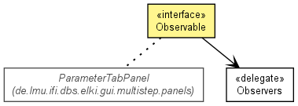

de.lmu.ifi.dbs.elki.utilities.designpattern
Interface Observable<T>
- Type Parameters:
T - the object to observer
- All Known Implementing Classes:
- AlgorithmTabPanel, EvaluationTabPanel, InputTabPanel, LoggingTabPanel, OutputTabPanel, ParameterTabPanel
public interface Observable<T>

Observable design pattern.
addObserver
void addObserver(Observer<? super T> o)
- Add an observer to the object.
- Parameters:
o - Observer to add
removeObserver
void removeObserver(Observer<? super T> o)
- Remove an observer from the object.
- Parameters:
o - Observer to remove